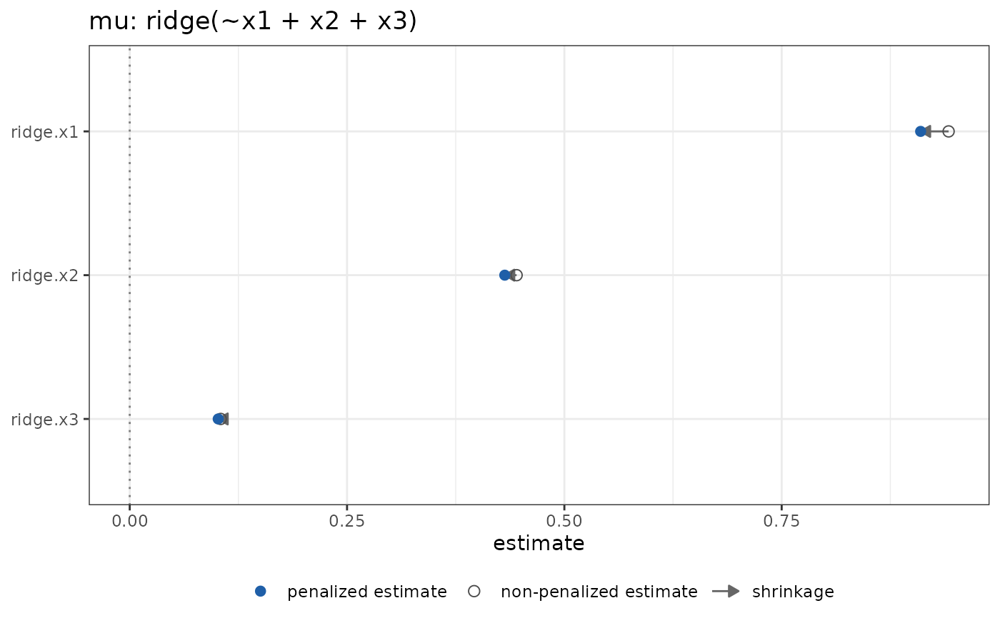

Selects the graph that compares the coefficients of a penalized block with
the coefficients that the same model would give without the penalty of that
term. Each row is one coefficient: a filled point marks the penalized
estimate, an open circle marks the approximate unpenalized estimate, and
an arrow runs from the second to the first. The graph applies to the
terms modelterms7::ridge(), modelterms7::lasso(), modelterms7::enet(), modelterms7::scad() and modelterms7::mcp(), to a smooth
and to a random effect.
Usage
plot_shrinkage(sort = TRUE, information = distributions7::expected_info())Arguments
- sort
Whether to order the coefficients by their penalized estimate.
- information
An object from
distributions7::expected_info()(the default) ordistributions7::observed_info(), the information of the log-likelihood in the step.
Value
A PlotShrinkage object, inheriting from term_plot.
Details
Let \(b\) be the penalized estimate of all the coefficients of the model, \(g(b)\) the gradient of the log-likelihood (without any penalty) at \(b\), \(I(b)\) the information of the log-likelihood over all the coefficients, and \(S_o\) the Hessian of the penalties of the other terms. The unpenalized estimate of the coefficients of the term is one Newton step on the model in which only the penalty of that term is removed, $$b_u = b + (I + S_o)^{-1} r,$$ where \(r\) equals \(g(b)\) on the coefficients of the term and is zero elsewhere. No model is refitted. Where the model has no other penalized term the step is \(b + I^{-1} g(b)\), which for a gaussian mean with the identity link is the least squares estimate exactly. The coefficients of the term are the only ones shown, but the step is taken on all the coefficients, so it accounts for their correlation with the rest of the model.
For a kinked penalty (a lasso, a SCAD or an MCP) the coefficients that the penalty holds at zero are part of the step: their unpenalized estimates are those of the model without the penalty, and the arrow shows the selection. The coefficients that a kinked penalty of another term holds at zero stay at zero in the step. A coefficient that the fit left out because its column is aliased is not drawn.
The step needs the information \(I + S_o\) to be invertible. When it is not (more coefficients than observations, or a random effect beside an intercept, whose group means are not identified without the penalty) the graph signals an error.
Examples
set.seed(1)
dd <- data.frame(x1 = rnorm(100), x2 = rnorm(100), x3 = rnorm(100))
dd$y <- 1 + dd$x1 + 0.5 * dd$x2 + rnorm(100)
fit <- statmod(y ~ ridge(~ x1 + x2 + x3), distributions7::gaussian1_distrib(),
dd)
ggplot2::autoplot(fit, term = "ridge(~x1 + x2 + x3)",
type = plot_shrinkage())
